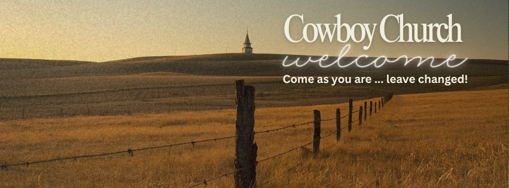

Welcome Home
A place to belong… where everyone feels at home. Come as you are… leave changed!
A living story stream for photos, testimonies, event recaps, and church family updates.
This page is built to become a living photo journal where church updates, event recaps, testimonies, and ministry highlights can be added over time.
For now, these example posts show how the finished story stream will look once church photos and updates are added through the admin portal.


A place to belong… where everyone feels at home. Come as you are… leave changed!

Country-style worship, practical Bible teaching, and a church family ready to welcome you.

Families are welcome, children are valued, and safety comes first.

A midweek place to build friendships, ask questions, and grow deeper in faith.

On third Sundays, we gather after service for food, laughter, and fellowship.

Prayer is at the heart of everything we do, and our Prayer Team is ready to pray with you.